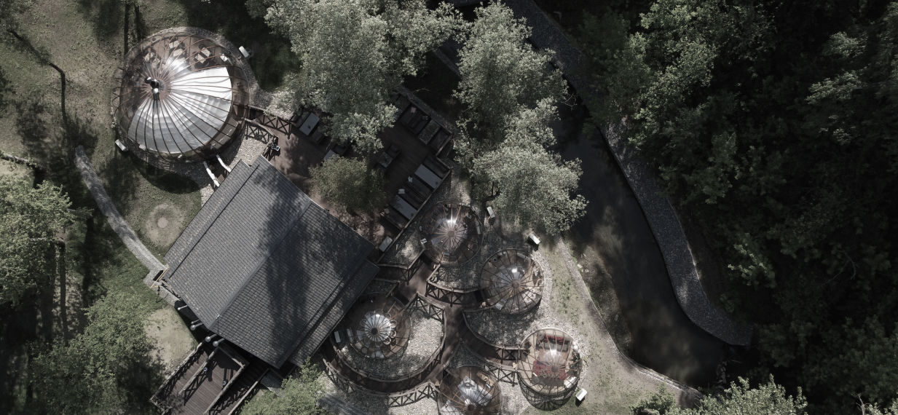

<section class="territory">
  <div class="container">
    <div class="territory__inner">

      <div class="swiper">
        <div class="swiper-wrapper">
          <div class="swiper-slide">

          </div>
        </div>
      </div>

      <div class="territory__item">
        <h3 class="territory__title">
          Территория
        </h3>

        

        <div class="content__wrap">
          <p class="content__wrap-title">
            Летняя терраса
          </p>
          <p class="content__wrap-text">
            Что меня по-настоящему радует, так это налаживание отношений, и это чудесно происходит на кухне,
            потому что еда — это язык, который объединяет людей. На кухне я становлюсь послом своей страны:
            самобытность людей определяется еще и тем, что они едят.
          </p>
          <a class="btn-border" href="/">
            забронировать
          </a>
        </div>
      </div>

    </div>
  </div>
</section>

.territory__item {
display: flex;
flex-direction: column;
align-items: flex-end;
gap: calc(var(--index) * 1.334);
padding: calc(var(--index) * 1.334);
border-radius: calc(var(--index) * 0.6);
background-image: url(./../img/territory.png);
background-repeat: no-repeat;
background-size: 100%;
background-position: center;
}

.territory__title {
font-family: 'Lighthaus';
font-style: normal;
font-weight: 400;
font-size: calc(var(--index) * 4);
line-height: 98.15%;
text-align: right;
text-transform: uppercase;
color: #F6EEDA;
}

.territory__item-img {
background: rgba(213, 199, 170, 0.35);
mix-blend-mode: hard-light;
}